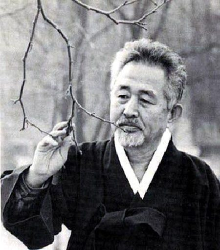
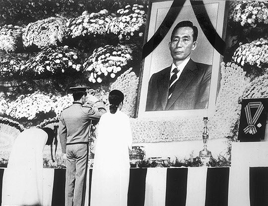

연재일 2015-05-18출처 조선일보 프리미엄조선 연재
(①편에서 계속)
6‧25전쟁 발발 전에 간신히 숙군(肅軍)의 사선(死線)을 빠져나온 박정희, 그의 전도(前途)가 암울하기 짝이 없었던 그때부터 그의 생이 비극으로 마감된 그날까지 언제나 한결같고 허물없는 술친구로 지내온 구상(具常) 시인. 박정희가 권유하는 국가재건최고회의 상임고문이나 장관직뿐만 아니라 대학 총장직도 번번이 사양했던 구상 시인이 경북 왜관의 베네딕트 수도원에서 ‘나자렛 예수’를 집필하고 있다. ‘졸지에 유명을 달리한 대통령 박정희’의 고독한 영혼을 위하여 조시(弔詩) ‘진혼축 鎭魂祝’을 바쳤다.
박정희의 친구, 구상 시인.
국민으로서는 열여덟 해나 받든 지도자요
개인으로는 서른 해나 된 오랜 친구
하나님! 하찮은 저의 축원이오나
인류의 속죄양, 예수의 이름으로 비오니
그의 영혼이 당신 안에 고이 쉬게 하소서
이 세상에서 그가 지니고 떨쳤던
그 장한 의기와 행동력과 질박한 인간성과
이 나라 이 겨레에 그가 남긴 바
그 크고 많은 공덕의 자취를 헤아리시고
하나님, 그지없이 자비로우신 하나님
설령 그가 당신 뜻에 어긋난 잘못이 있었거나
그 스스로 깨닫지 못한 허물이 있었더라도
그가 앞장서 애쓰며 흘린 땀과
그가 마침내 무참히 흘린 피를 굽어보사
그의 영혼이 당신 안에 길이 살게 하소서
‘설령 그가 당신 뜻에 어긋난 잘못이 있었거나/그 스스로 깨닫지 못한 허물이 있었더라도/그가 앞장서 애쓰며 흘린 땀과/그가 마침내 무참히 흘린 피를’ 굽어보시기를 구상의 조시는 절절히 희원하건만, 당장에는 그 간곡한 기도의 시어(詩語)에도 숱한 돌멩이가 날아들 것이었다. (실제로 그런 일이 일어났고, 구상 시인은 “독재자에게 조시를 바치다니!”라는 온갖 비난에 대해 “친구니까”라고 단 한마디만 반응했다.)
박정희의 실존이 없는 지상에는 두고두고 그의 공과(功過)에 대한 시비가 격렬하고도 지루하게 이어지게 되지만, 박정희의 갑작스런 공백이 발생한 시간대에 오직 포스코만으로 한정해서 들여다볼 경우, 그의 죽음은 포스코로 불어오는 온갖 정치적 외풍을 막아주던 가장 든든한 울타리가 느닷없이 사라진 것이었다. 별안간 박태준은 오싹했다.
박정희 대통령의 삼남매가 영정에 묵념하고 있다.
‘그 누가, 그 무엇이 앞으로 회사의 든든한 울타리 역할을 해줄 것인가?’
공든 탑이 무너지랴. 이것은 속담이어도 틀린 말일 수 있다. 공든 탑은 좀처럼 무너지지 않는다고 힘차게 주장하는 말인데, 실상은 탑을 쌓아 올리기야 어려워도 무너뜨리기야 얼마나 쉬우랴.

